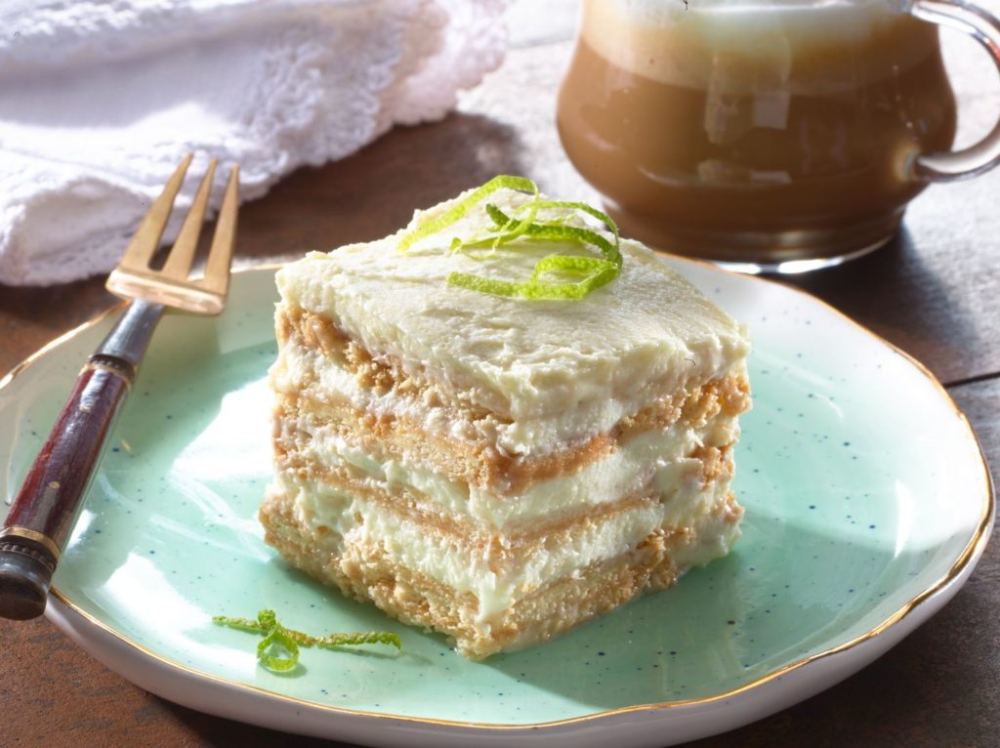

Home
Lime Pie

Description
This recipe features a detailed guide on how to prepare a lime pie, so simple yet delicious.
Ingredients
- 1 can of condensed milk (395g)
- 1 can of evaporated milk (360g)
- Lime juice (200 ml) 10 limes
- Two cookie packets
Materials
- Blender
- Filter
- Aluminum foil
- Refractory
Steps
- First, filter the juice so it is seed-free.
- Blend the lime juice with condensed and evaporated milk until it becomes a pasty substance.
- Inside the refractory put a layer of cookies, then another layer of paste. Repeat the process until the container is full.
- The last layer should be with paste, you can decorate it with cookie crumbs or shredded lime pieces.
- Cover the refractory with aluminum foil and put in the fridge for 3 hours so it can be ready to consume.
- Enjoy!!!